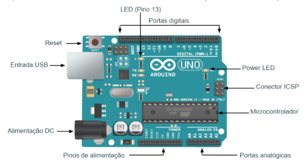
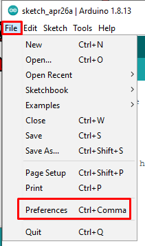
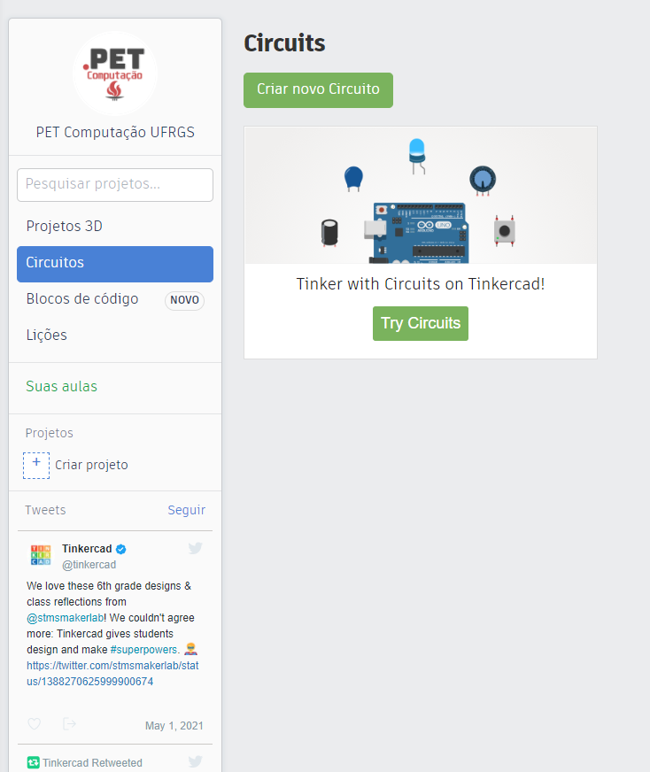
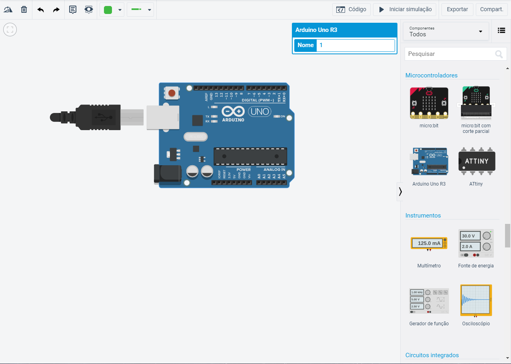
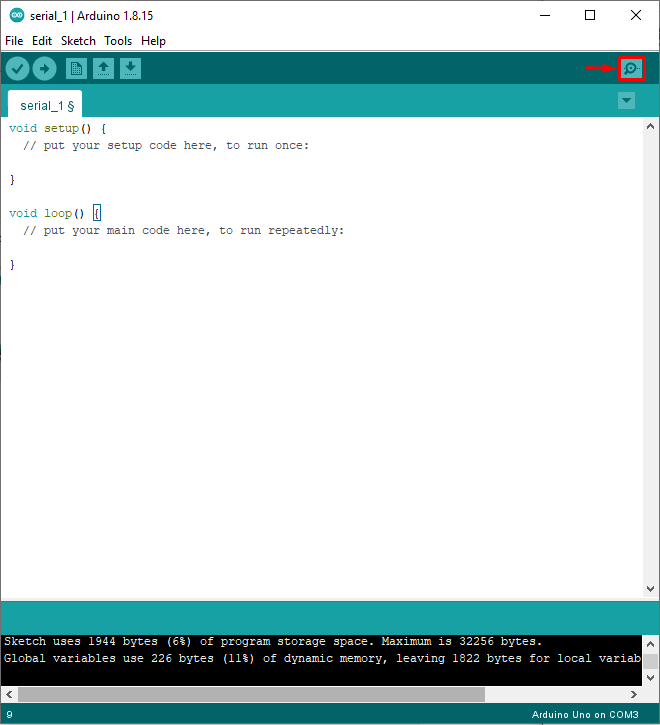

Introdução ao curso

O que é Arduino?
Arduino é uma plataforma eletrônica de código aberto baseada em hardware e softwares flexíveis e fáceis de se utilizar, tornando-se um meio perfeito para realizar prototipagens. A plataforma foi criada visando facilitar o ensino de eletrônica para estudantes e, por essas razões, possui um baixo custo e uma suave curva de aprendizagem.
As placas Arduino são capazes de ler entradas - que podem ser desde um simples botão até os mais diversos sensores, como de luz, distância e temperatura - e processando essas entradas, pode-se produzir uma saída - ativar um motor, acender um LED, operar um display ou até mesmo tomar ações na internet, como publicar um Tweet.
É possível utilizar a placa de forma independente ou conectada em um computador, por meio de uma porta USB, caso em que é possível programar e interagir com ela em tempo real. Assim, é possível notar que o Arduino tem potencial para estar presente nos mais diversos tipos de projetos e ser utilizado tanto por amadores quanto por profissionais.
Por que Arduino?
A plataforma Arduino apresenta várias vantagens, algumas delas são:
-
Preço - Placas Arduino são relativamente baratas, se comparadas a outras plataformas de microcontroladores. (Inserir um preço médio de kits encontrados na internet?)
-
Multi-plataforma - Não importa se estiver em uma plataforma GNU/Linux, Windows ou MacOS, você terá acesso a IDE do Arduino. Ela está disponível até mesmo para navegador! Isso é uma vantagem sobre a maioria dos outros microcontroladores, em que suas plataformas de desenvolvimento são disponibilizadas apenas para Windows.
-
Ambiente de programação simples - Com uma interface simples e limpa, onde tudo que você precisa está ao alcance de poucos cliques, acaba sendo simples para iniciantes mas também flexível para experientes. Além disso, é possível utilizar linguagens de programação mais complexas como o C++, ou também uma linguagem simples como o Wiring.
-
Extensibilidade - Por ser código aberto, existe uma comunidade que está sempre contribuindo uma gama enorme de extensões e bibliotecas para aumentar a compatibilidade do Arduino com outras plataformas, tanto em software como em hardware.
Tipos de placas
Existe uma vasta gama de modelos das placas Arduino. Cada uma tem suas particularidades e atendem a necessidades específicas.
Arduino Uno
O modelo mais popular de todos, também é a placa que usaremos como referência ao longo do curso. É fortemente recomendada para iniciantes pois seu preço é acessível e, possui uma fácil comunicação com um computador, via USB (que também alimenta a placa, sendo uma alternativa de uma fonte externa). 14 pinos digitais e 6 analógicos e uma vasta possibilidades de extensão através de módulos “shields” tornam esta placa flexível e a melhor alternativa para se começar no mundo do Arduino.
Arduino Pro Mini
Destinadas para usuários com mais experiência. Possui um baixo custo, e como o nome sugere, um tamanho pequeno. Não possui USB, plug para alimentação de energia e nem mesmo os cabeçalhos de pino (é necessário soldar os fios diretamente). Este modelo é uma boa escolha para quem quer deixar a placa embutida em um projeto.
Arduino Nano
Uma placa com um tamanho reduzido, mas sem deixar de lado certas comodidades. Diferente do modelo Pro Mini apresentado anteriormente, aqui há cabeçalhos de pinos e uma porta USB.
Arduino Mega
Devido ao grande números de pinos de entrada e saída (54 digitais e 16 analógicos) e maior capacidade de memória, o modelo Megga é ideal para projetos de maior porte. Também é muito indicado para quem é iniciante, pois ele se comporta de forma semelhante ao modelo Uno, porém possui um custo mais elevado.
Arduino Due
Esta placa possui o mesmo número de pinos do modelo Mega, porém nela há um processador ARM de 32 bits, o que significa uma maior capacidade de processamento comparado aos outros modelos Arduino. Além disso, ela possui duas portas USB. Além da porta para comunicação com outro computador, há uma porta que permite conexão com periféricos, aumentando ainda mais a sua aplicabilidade.
Anatomia do Arduino UNO
Nesta seção, serão apresentadas algumas partes básicas do arduino que serão referenciadas ao longo do curso. Caso não entenda algum termo aqui, não se preocupe, tudo será explicado detalhadamente nos próximos capítulos.

-
Botão de Reset: este botão é muito útil para testar e debugar a placa. Quando pressionado, o código presente na placa será executado desde o ínicio. Especialmente útil para quando se está tentando descobrir a origem de algum comportamento anormal no projeto.
-
Power LED: Estará aceso enquanto a placa estiver em funcionamento.
-
Portas Digitais: O Arduino Uno possui 14 portas de entrada e saída digitais, sendo que 6 delas pode-se usar com a função PWM (pinos com um ‘~’ antes de sua numeração). Também há os pinos 0 e 1, que podem ser utilizados para comunicação serial com outros microcontroladores. Além disso, os pinos 2 e 3 podem ser configurados para gerar uma interrupção externa.
-
LED (pino 13): Existe um LED conectado ao pino digital de número 13. Ou seja, se o pino 13 estiver recebendo/emitindo um sinal positivo, o LED acenderá.
-
Portas Analógicas: O Arduino possui 6 portas analógicas com resolução de 10 bits. Estas portas são perfeitas para lidar com sensores.
-
Entrada USB: Utilizada tanto para alimentação da placa quanto para a comunicação com um computador (Utilizaremos ela para usar a IDE e fazer upload do nosso código para a placa).
-
Alimentação DC: Pode-se utilizar como alternativa ao USB, um conector Jack com a tensão entre 7V e 12V.
IDE
O termo IDE vem de “Integrated Development Environment”, que em tradução livre significa “Ambiente de desenvolvimento Integrado”, é um software que reúne diversas ferramentas e automações para facilitar o desenvolvimento de softwares.
A IDE do Arduino é de fácil uso e instalação, disponível para plataformas Windows, Linux e macOS. É possível encontrar o download em https://www.arduino.cc/en/software. Também pode-se baixar em diversas lojas de aplicativos, como a Microsoft Store, para a plataforma Windows. A seção Baixando e instalando a IDE descreve um passo a passo de como fazer o download e a instalação na plataforma Windows.
Interface básica
A interface da IDE é bem simples, com um menu de opções no topo, seguido por um cabeçalho que contém funções frequentemente usadas, como salvar, compilar, upload, entre outras que estão demonstradas na imagem abaixo. Também há a área para a edição do código e logo abaixo, um terminal que dará informações de upload, compilação e possíveis erros caso haja falhas no processo.

Alterando o idioma da IDE
Caso deseje modificar o idioma do IDE, basta acessar o menu File > Preferences (ou digitar o atalho CTRL + , ) e na caixa Editor Language selecionar o idioma desejado. É necessário abrir novamente a IDE para as mudanças serem aplicadas.


Baixando e instalando a IDE
O passo a passo a seguir foi feito em agosto de 2021, talvez haja modificações desde sua criação até a data em que você está lendo isso. Caso acredite ser pertinente uma mudança neste texto, informe-nos através do email pet@inf.ufrgs.br.
Acesse a página Arduino Software (IDE). Aqui é possível encontrar o download para as diversas plataformas que têm suporte à IDE. Escolha a que você está utilizando.

Como o projeto é open source, sua manutenção e desenvolvimento de novas funcionalidades depende de doações, caso seja de seu interesse contribuir financeiramente com o projeto, nem que seja com um pouco, pode fazer isso nesta tela. Caso não tenha condições ou não deseje contribuir, basta clicar no botão “JUST DOWNLOAD”.

Instalação - Windows
Execute o arquivo .exe baixado com permissões de Administrador. Leia e concorde com os termos de licenciamento.

Caso deseje uma instalação padrão (recomendado), apenas clique em “Next”.

Selecione a pasta de destino da instalação. Pode-se deixar como o padrão. Clique em “Install”.

Começará então o processo de instalação da IDE Arduino, o processo pode levar alguns minutos. Após, basta clicar em “close” e a instalação estará completa.

Arduino Editor - IDE online
Além da IDE instalada no computador, é possível editar código Arduino e enviar para a placa através de um navegador, utilizando o Arduino Editor. Ao acessar o link, é apresentada uma página de login. É possível criar uma conta no site, ou se preferir, também pode-se fazer login com sua conta Google ou Apple.
Ao acessar o Editor pela primeira vez, o próprio site irá fazer um guia das principais features. Será necessário instalar um Agent para que o site possa fazer uso da porta USB em que a placa Arduino está conectada, neste link é possível acessar instruções de como instalar o Agent. Após instalado, basta selecionar a porta e a placa no painel que se encontra acima do editor de texto


Plataforma Tinkercad
O Tinkercad é uma plataforma online e gratuita que apresenta recursos para o aprendizado, proporcionando a possibilidade de criação e simulação de modelos 3D e circuitos, incluindo o Arduíno. Para utilizar a plataforma, basta criar uma conta no site oficial e em seguida, com um simples clique é possível criar um novo projeto de circuitos.

O Tinkercad oferece uma vasta gama de componentes eletrônicos para você utilizar, que aparecem no painel à direita. Existem várias categorias de componentes, desde os básicos (leds, botões, sensores e baterias), circuitos integrados, transistores, chips de lógica, instrumentos de medida (multímetro, osciloscópio) e microcontroladores (incluindo o Arduíno Uno R3). É um laboratório completo onde o limite é a imaginação do usuário. Por ter uma interface drag-and-drop, basta arrastar os componentes para a posição desejada. Tente arrastar uma placa Arduino para a área de projeto, como na imagem abaixo. Caso não consiga encontrar a placa, basta digitar seu nome na barra de busca acima da lista de componentes.

Você notará que na barra superior existe um botão de código. Ao clicar nele a aba de programação é aberta. O Tinkercad possibilita dois tipos de programação: uma utilizando código, da mesma forma que se programa em uma IDE, e outra em forma de blocos, baseada na linguagem Scratch.

É possível notar que no exemplo padrão, o LED incorporado à placa (ver Anatomia do Arduíno) irá piscar com intervalos de 1 segundo. Ao clicar em Iniciar simulação, na barra superior, é possível ver esse comportamento na placa.
Não só é possível programar em blocos, mas também ver o equivalente em código, assim. Dessa forma, a ferramenta acaba se tornando poderosíssima no aprendizado, visto que traduz algo em uma linguagem simples e visual em código para o arduino. Para habilitar essa visualização, basta mudar do modo Blocos para Blocos + texto. Para este exemplo inicial de piscar o led temos exatamente o mesmo código de exemplo que foi utilizado para testar a IDE. Note que não é possível editar o texto, para fazer isso é necessário mudar para o modo Texto
CUIDADO: Ao mudar para o modo Texto uma mensagem de aviso é mostrada na tela. Esteja ciente que ao clicar em Continuar, todos os blocos serão perdidos. O código gerado por eles permanecem, mas o processo inverso NÃO É POSSÍVEL. Ou seja, uma vez mudado para o modo onde o texto do código é editável, não é possível retornar ao modo de edição em blocos, e qualquer tentativa de fazer isso fará com que seu código vire o exemplo padrão (LED embutido piscando a cada 1 segundo).
Funções Básicas
Nas próximas subseções serão apresentadas algumas funções básicas e necessárias para escrever um código em Arduíno. Demais funções de uso específico serão apresentadas ao decorrer do curso. Caso deseje ver a lista completa de funções, ela pode ser encontrada no site Arduino Reference.
setup() e loop()
setup()
A função setup() é uma das duas funções que aparecem em seu editor de texto toda vez que um projeto novo é iniciado. Ela é utilizada, por exemplo, para inicializar variáveis, definir os modos dos pinos e inicializar a comunicação serial e as bibliotecas. A função setup() só irá rodar quando a placa for ligada ou reiniciada.
loop()
A função loop() também aparece em seu editor de texto toda vez que um projeto novo é iniciado, e será executada após o setup(). O nome é sugestivo: tudo que está dentro dessa função será repetido consecutivamente, assim o programa pode mudar e responder de acordo com os inputs recebidos pela placa.
Funções de Entrada e Saída
pinMode()
Na função pinMode() é feita a configuração de um pino digital como sendo de entrada (INPUT) ou saída (OUTPUT). Ela é normalmente utilizada dentro da função setup(). É de extrema importância que todos os pinos utilizados sejam configurados através dessa função.
Para o funcionamento correto da função, deve-se seguir a seguinte sintaxe: pinMode(pino, modo).
Onde pino é o número do pino que deseja-se aplicar o modo, que pode ser INPUT ou OUTPUT.
digitalRead()
A função digitalRead() retorna o valor lido em um pino digital específico, que irá retornar LOW (quando não há corrente passando pelo pino) ou HIGH (quando há corrente passando pelo pino).
A sintaxe da função é dada por: digitalRead(pino), onde o parâmetro pino é dado pelo número do pino que se deseja ler.
digitalWrite()
Já na função digitalWrite() é possível escrever em um pino digital específico, ou seja, serve para definir a voltagem que o pino estará emitindo, 5V ou 3,3V para o valor de HIGH ou 0V para LOW.
A sintaxe da função é dada por digitalWrite(pino, valor), onde pino é o número do pino que deseja-se inscrever o valor (LOW ou HIGH).
Funções de Tempo
Existem basicamente dois tipos de funções de tempo: um deles faz uma pausa e o outro retorna o tempo desde que a aplicação está rodando.
delay() e delayMicroseconds()
Na função delay(), é passado como parâmetro um valor de tempo em milissegundos e ao executar, o programa entrará em modo de espera pelo tempo especificado. Caso seja necessário uma maior precisão, pode-se usar a função delayMicroseconds() que como o nome sugere, executará uma pausa no programa de acordo com o valor em microssegundos que foi passado para o programa.
millis() e micros()
Com a função millis() é possível obter o tempo em milissegundos que decorreu desde que a placa Arduino começou a rodar o programa. Também existe a versão em microsegundos, dada pela função micros().
Há uma diferença no formato do valor passado para as funções, enquanto as que operam sobre milissegundos utilizam no formato unsigned long, podendo variar de 0 a 4.294.967.295, as que operam sobre microssegundos utilizam-se do formato unsigned int, no qual o alcance vai de 0 a 65.535. Assim, a função micros() pode armazenar um tempo de até cerca de 70 minutos enquanto a função millis() armazena aproximadamente 50 dias. Ao atingir o valor máximo, acontece um overflow, fazendo com que o valor retorne a 0, recomeçando a contagem.
1 segundo = 1.000 milissegundos = 1.000.000 microsegundos
Hardware básicos
Nas próximas subseções serão apresentados alguns componentes utilizados em diversos projetos de Arduino.
Protoboard
Também conhecida como “placa de ensaio”, “matriz de contato” ou até mesmo “breadboard”, a Protoboard, como é comumente chamada no meio do Arduino, é uma placa com furos que possuem linhas de contatos entre eles, utilizada na montagem de protótipos. Essa placa se encaixa perfeitamente no contexto desse curso, pois testes e modificações são partes quase que intrínsecas de um projeto em Arduino, ainda mais quando se está no processo de aprendizagem.
Protoboards consistem basicamente dois grupos de faixas, são eles:
- Faixa de terminais: faixa de contatos onde são instalados os componentes eletrônicos. São trilhas dispostas na vertical, geralmente em grupos de cinco conectores e um entalhe, demarcando a linha central da placa (que normalmente é espelhada) e para melhor acomodar circuitos integrados e outros componentes que possam vir a ser instalados.
- Faixa de barramentos: usada para o fornecimento de tensão ao circuito, é constituída de duas faixas horizontais na extremidade, uma reservada para o condutor negativo (terra, marcado em preta ou azul) e outra para o positivo, marcado em vermelho.
É possível imaginar essas faixas como se fossem um único fio (e, de fato há uma pequena faixa metálica que as conecta). Assim, ao plugar um componente em um terminal, é como conecta-lo a todos outros componentes em toda a faixa. É possível ver o alinhamento dos terminais na imagem abaixo.

A possibilidade de modificar posições de peças facilmente, rearranjar cabos e adicionar novos componentes faz com que o projeto seja facilmente modificado para corrigir possíveis erros ou implementar melhorias no projeto. Contudo, existem lados negativos em seu uso: pode haver “mau-contato” entre os terminais e resistência entre os contatos da placa e os componentes encaixados além de que um elevado número de “jumpers” pode causar interferência em outros componentes. Por essa razão, recomenda-se o uso de “jumpers” curtos e que não se faça muitos cruzamentos entre eles.
LED
A sigla LED vem do termo light-emitting diode (diodo emissor de luz). São componentes que quando percorridos por uma corrente elétrica são capazes de emitir luz. A luz emitida pode ser de diferentes cores, mas também, um LED pode emitir luz fora do espectro visível como a ultravioleta e a infravermelha (muito utilizada para comunicações entre dispositivos, como o controle remoto e uma televisão).
Presentes em diversas áreas de eletrônica por terem uma longa vida útil, custo de manutenção e fabricação reduzido e pela sua versatilidade. Será muito utilizado nos projetos de arduinos deste curso
Um LED comum possui dois terminais, chamados de ânodo (positivo) e cátodo (negativo). Para a identificação dos terminais, basta observar qual deles é o maior, este é o ânodo (também pode-se determinar olhando para dentro do LED, há duas placas de metal, a placa mais larga identifica o ânodo).
{kind=link}
Para o funcionamento de um LED, é necessário alimentá-lo com energia corrente. A faixa de operação geralmente é de 6 a 20 mA e uma tensão de 1 a 3,3V. Tais valores variam de acordo com o tamanho e o modelo, por isso é recompensado verificar as especificações fornecidas pelo fabricante. Normalmente os LEDs são acompanhados por resistores para ajustar a tensão e corrente para não haver a “queima” do mesmo
Resistores
Um resistor eletrônico é um dispositivo elétrico capaz de limitar a corrente elétrica em um circuito e transformando energia elétrica em energia térmica (através do efeito joule). A resistência causa a queda de tensão em um circuito elétrico, porém jamais causa queda de corrente elétrica, apesar de limitá-la. Isso significa que a corrente elétrica que entra em um terminal do resistor será exatamente a mesma que sai pelo outro terminal, porém há uma queda de tensão, ou seja, uma diferença de potencial entre os terminais do resistor. Utilizando-se disso, é possível usar os resistores para controlar a corrente elétrica sobre os componentes desejados.
Como visto anteriormente, um LED possui limitação de corrente e tensão, uma forma de controlar esses valores para evitar que o componente estrague, é necessário utilizar um resistor, para que os limites impostos pelo fabricante não sejam ultrapassados
Qualquer objeto físico pode ser considerado um resistor: plástico, borracha, o corpo humano e até mesmo o vácuo possuem resistência mensuráveis. Essa resistência se dá pela divisão da diferença de potencial pela corrente elétrica, e é medido em ohms (Ω). Metais são materiais que possuem uma baixa resistência, por isso normalmente são utilizados em fios (como o cobre ou até mesmo ouro).
Os resistores utilizados em circuitos elétricos são pequenos componentes cilíndricos, geralmente possuem 4 faixas coloridas (existem os de 5 faixas, também chamados de resistores de precisão). Tais faixas são utilizadas para determinar o valor da resistência. As duas (ou três, no caso de resistores de precisão) primeiras faixas indicam quais os primeiros dígitos do valor da resistência. A próxima faixa corresponde ao fator de multiplicação. Por fim, a última faixa corresponde a percentagem da tolerância do resistor, esta faixa se encontra mais distanciada das outras.
Abaixo é possível encontrar uma tabela com as cores e seus valores correspondentes em cada faixa
| Cor | 1ª faixa | 2ª faixa | 3ª faixa (mult) | 4ª faixa (tol) |
|---|---|---|---|---|
| Preta | - | 0 | x 1 Ω | - |
| Marrom | 1 | 1 | x 10 Ω | 1% |
| Vermelha | 2 | 2 | x 100 Ω | 2% |
| Laranja | 3 | 3 | x 1 KΩ | 3% |
| Amarela | 4 | 4 | x 10 KΩ | 4% |
| Verde | 5 | 5 | x 100 KΩ | 5% |
| Azul | 6 | 6 | x 1MΩ | 25% |
| Violeta | 7 | 7 | x 10 MΩ | 0.1% |
| Cinza | 8 | 8 | - | 0.05% |
| Branca | 9 | 9 | - | - |
| Prata | - | - | x 0,01 | 10% |
| Dourada | - | - | x 0,1 | 5% |
Tome como exemplo o resistor de quatro faixas abaixo. Suas duas primeiras faixas são amarela e cinza, respectivamente, é possível tirar o número 48. Analisando a terceira faixa, de cor vermelha basta multiplicar o valor anteriormente obtido (48) por 100, obtendo assim 4800 Ω, com uma tolerância de 5% (última faixa dourada). Perceba que a última faixa está mais distanciada das demais, para poder diferenciá-la da primeira faixa.

Botão tátil
Ter uma forma que permita ao usuário inserir alguma informação para modificar o estado do código é algo essencial na computação. Um exemplo disso é o teclado, que nada mais é do que um conjunto de botões.
Os botões táteis mais comuns e que normalmente são utilizados em projetos de Arduino possuem 4 terminais, sendo que eles são conectados internamente aos pares, como demonstrado na imagem abaixo. Um botão tátil nada mais é que um interruptor que, quando apertado, faz o contato entre os dois terminais, e, no momento em que é “solto” desfaz esse contato.

Uma forma de utilizá-lo com o Arduino está demonstrada na imagem abaixo. Quando acionado, o botão permitirá a passagem de corrente entre o terminal de saída da placa até o pino 13, fazendo com que o LED da placa seja ligado.

Porém existe um problema prático nesta forma de se utilizar botões táteis. Quando o botão não está acionando, o pino digital 13 não está necessariamente recebendo um sinal terra (ou seja, 0V correspondendo ao estado LOW) devido a possíveis interferências eletromagnéticas. Então, ao fazer um projeto um pouco maior, com diversos jumpers e dispositivos próximos, a probabilidade da porta digital receber um valor aleatório aumenta. Para contornar isso, existe uma forma de configurar o botão de tal forma que quando não pressionado, seja enviado à porta digital o valor de LOW (modo PULL-DOWN) ou HIGH (modo PULL-UP) por padrão, eliminando o problema da interferência.
Para fazer com que o botão fique configurado de modo PULL-DOWN, basta conectar no pino de digital, além do botão, um resistor (de preferência com uma resistência relativamente alta, como 10KΩ para evitar um consumo desnecessário de energia), como demonstrado na imagem abaixo.

Este circuito funciona da seguinte maneira: quando o botão não está pressionado, o terminal GND está em contato direto com o pino digital, sendo assim, estará sempre no modo LOW. Ao ser pressionado, o botão cria o contato entre o 5V e o pino digital. A corrente, então, tem dois possíveis caminhos para seguir: pode ir tanto para o pino GND (causando um curto circuito) ou para o pino digital. A corrente elétrica sempre segue o caminho com menos resistência, então como não há resistência até o pino digital (tecnicamente existe a resistência do fio, mas é desprezível) e por haver um resistor com resistência relativamente alta no caminho para o pino GND, a corrente irá para o pino digital, acionando o LED da placa Arduino.
Para realizar a construção do botão no modo PULL-UP, basta conectar o resistor no terminal de 5V (ou de 3V se for o caso) e o terminal GND diretamente ao botão. Dessa forma, o pino digital estará em modo HIGH sempre que o botão não estiver sendo pressionado.
Buzzer
O buzzer, também conhecido como piezo é um componente que utiliza o efeito piezoelétrico, transformando energia elétrica em energia mecânica, e o som nada mais é do que propagação de ondas mecânicas em uma faixa de frequência entre aproximadamente 20Hz e 20KHz .
Existem dois tipos de buzzer, o ativo e o passivo. O primeiro normalmente possui sua traseira lacrada e possui pinos de diferentes tamanhos, enquanto que no buzzer passivo a placa PCB está à mostra em sua traseira e ambos os pinos tem o mesmo tamanho. Ambos os tipos de buzzer, em sua frente, possuem um sinal de “+” indicando qual pino é o terminal positivo.
O buzzer ativo é o mais simples dentre eles, pois basta energizar ele já começa a apitar continuamente. Ele não depende de um circuito externo. Por esse motivo ele não é o mais indicado para criar melodias, mas sim para sinalizações - como alarmes. Sua utilização com o arduino acaba se tornando simples, visto que para ativá-lo basta utilizar a função digitalWrite().
Já com o buzzer passivo, apenas energiza-lo não é o suficiente - ao fazer isso ele apenas emitirá um estalo e ruídos. Para o bom funcionamento dele é necessário utilizar algum circuito para emitir sinais, como se fosse um auto-falante - e isso trás mais precisão na frequência emitida, fazendo com que diversos sons e melodias possam ser gerados. Para se utilizar o buzzer passivo com o arduino, é necessário utilizar a função tone(pino, frequência, duração), onde o parâmetro pino é a porta na qual o buzzer está conectado, frequência é a frequência do som gerado e o parâmetro duração é o tempo em que o buzzer permanecerá emitindo o som.
Primeiro projeto - Contador binário
Agora que você sabe o básico do funcionamento do Arduíno e de alguns componentes eletrônicos, utilizar esse conhecimento para criar um pequeno projeto, pois a prática é essencial para a fixação do aprendizado. Nesa seção você aprenderá a fazer um contador binário de 4 bits, ou seja, onde será possível contar de 0 a 15 utilizando LEDs.
Hardware
Materiais necessários
- 4 LEDs
- 4 resistores de 330 Ω
- 5 jumpers
Esquemático

Utilize jumpers para conectar o terminal positivo (Anodo) de cada um dos LEDs em um pino digital da placa. A escolha dos pinos é arbitrária, mas lembre-se de inserir corretamente no momento de escrever o software. Insira nos terminais negativos (cátodo) os resistores, conectando a trilha negativa da faixa de barramentos. Insira também um jumper conectando a trilha ao pino GND da placa.
Software
Primeiramente é necessário fazer uma declaração para ter um controle mais facilitado sobre os LEDs. Para isso, basta inserir no início do código int led[] = {3, 4, 5, 6};. Neste vetor você deve colocar os pinos digitais em que os leds estarão conectados na placa Arduino.
Em seguida, dentro da função setup(), é necessário configurar os pinos dos leds como OUTPUT. A função ficará da seguinte forma:
void setup()
{
pinMode(led[0], OUTPUT);
pinMode(led[1], OUTPUT);
pinMode(led[2], OUTPUT);
pinMode(led[3], OUTPUT);
}
Uma forma alternativa e mais otimizada de realizar tal operação é utlizando um laço. Como se está utilizando vetores, isso aparece naturalmente, a função ficará da seguinte forma:
void setup()
{
for (int i=0; i<4; i++)
{
pinMode(led[i], OUTPUT);
}
}
Com todos os pinos configurados, é possível trabalhar agora na função loop(). Como a contagem é de 0 a 15, é necessário fazer um laço for() apropriado para isso, onde será criada uma variável chamada de num que percorrerá as posições de 0 até 15.
for (byte num=0; num<=15; num++)
A função bitRead()
A função bitRead(num, n) é essencial para este projeto. A função lê o bit n (sendo 0 o bit menos significativo) de um dado valor num. Por exemplo, para o valor 13, que é representado em binário como sendo 1101, os bits 0, 2 e 3 são 1, enquanto o bit 1 é 0.
Será necessário checar cada um dos 4 bits da variável num para que os LEDs possam ser definidos de acordo com o valor retornado pela função readBit(). Para isso, outro laço deve ser criado: for (int n=0; n<=3; n++). A cada iteração do laço, será feita a verificação de cada bit do número, utilizando a função bitRead(). Caso ela retorne 1, o um sinal HIGHserá enviado para o pino do LED, fazendo com que ele acenda; caso contrário, será enviado sinal LOW, fazendo com que ele apague.
if (bitRead(num, n) == 1)
{
digitalWrite(led[n], HIGH);
}
else
{
digitalWrite(led[n], LOW);
}
}
Tecnicamente, o contador está pronto. Mas o que acontecerá ao rodar o código desta maneira? Você provavelmente verá todos os leds acesos, ou até quem sabe apagados. Isso acontece pois o código roda tão rápido e os LEDs estão constantemente se acendendo e apagando que você tem uma impressão de continuidade. Para que seja possível ver os efeitos do contador nos LEDs, é necessário utilizar uma função de delay. 2 segundos é um bom tempo para ver o contador funcionando. Acrescente após o laço for delay(2000);.
O código completo ficará da seguinte maneira:
/* Programa com a implementação de um contador binário de 4 bits utilizando LEDs */
int led[] = {2, 3, 4, 5}; // Vetor representando os pinos dos leds
void setup()
{
// Seta todos os pinos dos leds como OUTPUT
for (int i=0; i<4; i++)
{
pinMode(led[i], OUTPUT);
}
}
void loop()
{
for (byte num=0; num<=15; num++)
{
for (int n=0; n<=3; n++)
{
if (bitRead(num, n) == 1)
{
// Se o bit lido for 1, o led na posição correspondente irá acender
digitalWrite(led[n], HIGH);
}
else
{
// Caso o bit for 0, o led irá apagar
digitalWrite(led[n], LOW);
}
}
// Delay de 2 segundos para o contador ser perceptível.
delay(2000);
}
}

PWM - Controlando intensidade do LED
A sigla PWM vem do inglês Pulse Width Modulation, e é uma técnica para obter resultados analógicos utilizando sinais digitais. Ondas quadradas são geradas, mudando o nível lógico de alto para baixo, e o tempo relativo em que a onda passa em cada um desses estados acaba simulando voltagens entre 0V e 5V.
Na prática funciona da seguinte maneira: se a onda tiver uma largura de pulso 0, ou seja, estará sempre no nível baixo, ela emitirá 0V. Caso o pulso passe o mesmo período de tempo nos níveis baixo e alto, a largura da onda será de 50% emitindo assim 2.75V.
A placa Arduino UNO possui 6 pinos digitais que suportam o PWM. Eles são representados por um '~' ao lado da sua numeração, sendo eles os pinos de números 3, 5, 6, 9, 10 e 11.
Para controlar os ciclos ativos nas portas, é utilizada a função analogWrite(pino, valor), onde pino deve ser um dos pinos PWM e valor deve ser um inteiro entre 0 e 255 (emitindo 0v e 5v, respectivamente).
Hora de colocar isso em prática. A seguir será demonstrado um programa simples para fazer com que um LED vá aumentando e diminuindo seu brilho, em um efeito pulsante, utilizando as portas digitais com suporte a PWM.
Hardware
Materiais necessários
- 1 LED
- 1 Resistor de 330Ω
Esquemático

A montagem do hardware é muito simples, basta conectar o ânodo do LED em um pino digital com suporte à PWM. Neste exemplo é utilizado o pino 3, mas sinta-se livre para utilizar qualquer um dos outros pinos, apenas lembre-se de declará-lo corretamente no momento em que for escrever o código! Também é necessário conectar o cátodo do LED ao resistor, que deve ser conectado ao terminal GND. Abaixo uma imagem demonstrando o esquemático para este projeto.
Software
Primeiramente, é necessário declarar em qual porta o LED está conectado e o brilho inicial, que será 0, (ou seja, o led apagado). Também será necessário um valor que representará a taxa com que o brilho irá se modificar, que aqui será definido como 5. Assim o primeiro bloco de código fica :
int led = 3; // Pino PWM em que o LED está conectado
int brilho = 0; // Brilho inicial do LED
int taxa = 5; // Taxa com que o brilho se modificará a cada iteração
Na função setup() será necessário apenas declarar o pino como sendo de saída com o seguinte comando pinMode(led, OUTPUT);. Já na função loop() deve-se enviar para o pino o brilho que o LED deve assumir, incrementar ou decrementar o valor do brilho (bem como checar se ele chegou aos limites de 0 e 255) e por fim, mas não menos importante, acrescentar uma pausa no loop para que seja possível visualizar alguma mudança significativa no LED.
analogWrite(led, brilho);
brilho = brilho + taxa;
if (brilho <= 0 || brilho >= 255) {
taxa = -taxa;
}
delay(100);
Abaixo está o código completo para este programa
/* Utilizando PWM para controlar a intensidade de um LED */
int led = 3; // Pino PWM em que o LED está conectado
int brilho = 0; // Brilho inicial do LED
int taxa = 5; // Taxa com que o brilho se modificará a cada iteração
void setup() {
// Declara o pino do LED como sendo de saída
pinMode(led, OUTPUT);
}
void loop() {
// Define o brilho do LED
analogWrite(led, brilho);
// Muda o valor do brilho para que na próxima iteração do loop
// a voltagem no pino possa ser modificada
brilho = brilho + taxa;
// Caso estiver nos limites dos valores aceitos pela porta PWM,
// inverte-se a taxa com que o valor do brilho é modificado
if (brilho <= 0 || brilho >= 255) {
taxa = -taxa;
}
// Tempo de espera para a proxima iteração, para que seja perceptivel
// a mudança no brilho do LED
delay(100);
}
Ao compilar e enviar o código para a placa, você notará que o LED começará desligado e irá aumentar seu brilho até atingir um pico, e depois irá se apagando aos poucos. Caso queira que o pulso seja mais rápido, basta modificar o valor da taxa e/ou o tempo na função delay().

Monitor Serial
O Monitor Serial é uma ferramenta muito útil na hora de interpretar dados de sensores, depurar e controlar a placa Arduino através do computador. Para acessar a tela do Monitor Serial, certifique-se de que o Arduíno esteja conectado através da porta USB, e na sua IDE clique no ícone com uma lupa, no canto superior direito ou utilize o atalho CTRL + SHIFT + M.

Para utilizar o Monitor Serial, deve-se primeiramente inicializa-lo dentro da função setup(). Para isso, utiliza-se a função Serial.begin(velocidade), onde o valor de velocidade está relacionado com a taxa de transmissão de dados. Nos diversos experimentos realizados aqui, será utilizado por padrão o valor de 9600, porém lembre-se de que isso não é uma regra! Esse valor pode (e deve) ser modificado de acordo com as necessidades de cada projeto.
Na tabela abaixo são apresentadas algumas das funções mais comuns para manipular as portas seriais.
| Função | Descrição |
|---|---|
| available() | Retorna o número de bytes disponíveis para leitura (o buffer armazena até até 64 bytes). |
| print() | Envia dados para o monitor serial no formato ASCII (que é facilmente legível para humanos). |
| println() | Possui a mesma função que o print(), porém irá adicionar uma quebra de linha logo em seguida. |
| read() | Retorna o primeiro byte de dados recebidos disponível, ou -1 caso não haja nada disponível. |
| readBytes() | Lê caracteres da porta serial e os move para um buffer. |
| readBytesUntil() | Retorna o número de bytes lidos e os colocad em um buffer. Os dados são lidos na porta serial até que um caractere especificado seja atingido. |
| write() | Envia dados em formato binário para a porta serial. |
Nos próximos tópicos serão apresentados alguns projetos simples demonstrando o funcionamento do Monitor Serial.
Medindo a luminosidade do ambiente
Uma das funções mais poderosas do Arduino é a sua vasta gama de sensores e módulos disponíveis e sua fácil integração na hora de escrever um código. Imagine poder conectar sensores de temperatura e umidade para acionar um ar condicionado, ou um sensor de luminosidade para controlar o acionamento de uma lâmpada, ou quem sabe automatizar o funcionamento de eletrodomésticos. Já pensou acordar e ter café prontinho lhe esperando? Melhor ainda, imagine tudo isso integrado e sendo controlado através de um celular ou de um computador! Tudo isso é possível com placas microcontroladoras, como o Arduino. Infelizmente, por agora a implementação destas funcionalidades foge do escopo deste curso, mas com os próximos projetos aqui demonstrados você terá uma base de conhecimento para começar a trabalhar com módulos e sensores. A partir daí, basta soltar sua criatividade e buscar mais referências externas!
Este projeto, apesar de simples, terá como objetivo entender como funciona um sensor de luminosidade LDR e, com ele, implementar um programa que irá monitorar a luminosidade de um ambiente. Caso a luminosidade esteja abaixo de um certo valor, um LED acenderá (o LED serve como uma abstração, em uma aplicação prática você poderia conectar, no lugar do LED, um módulo relé e acionar uma lâmpada, por exemplo).
O LDR (Light Dependent Resistor, ou em tradução livre, Resistor Dependente de Luz) é um sensor que, como o próprio nome indica, se trata na verdade de um resistor que varia a sua resistência de acordo com a luminosidade incidida nele. Quanto mais luz, menor será a resistência, porém os valores específicos podem variar de acordo com condições do ambiente, fabricante do sensor e até mesmo o estado do circuito onde o resistor está inserido.
A plataforma Tinkercad é perfeita para fazer testes com sensores LDR, pois nela, além de ajustar a luz incidente no sensor em tempo de execução, é possível monitorar a corrente e a resistência produzidas pelo LDR. Basta colocar na área de trabalho um Multímetro (coloque ele no modo R para medir a resistência) e um Fotossensor e conectar os terminais como na imagem abaixo. Após iniciada a simulação, é possível clicar sobre o Fotossensor e ajustar a luminosidade. É possível perceber a mudança no valor da resistência mostrado no multímetro, conforme o input de luminosidade é modificado.

Com o entendimento do sensor é possível partir para o projeto. Comece criando um novo sketch em sua IDE do Arduino. Primeiramente será necessário declarar em qual pino digital estará o LED e em qual pino analógico estará o sensor de luminosidade. Pela primeira vez os pinos analógicos aparecem em um projeto, eles tem uma resolução de 10 bits, ou seja, podem enviar/receber valores inteiros de 0 até 1023, tornando sua utilização com sensores perfeita, já que muitas vezes é necessário ter precisão e/ou uma larga faixa de trabalho (poderia-se usar também algum pino PWM, porém sua resolução é de apenas 8 bits (variação de 0 a 255)).
Hardware
Materiais necessários:
- 1x LED
- 1x Resistor de 330Ω
- 1x Resistor de 10KΩ
- Sensor de Luminosidade LDR
Esquemático:

Software
Para começar, é necessário declarar alguns parâmetros, como os pinos utilizados (conforme configurado no momento da montagem do circuito) e uma variável para armazenar os dados lidos no sensor, que aqui é chamada de luminosidade, já inicializada com 0. Por fim, declare também um valor para o limite de luminosidade. Você deve ajustar esse valor conforme sua necessidade; aqui será utilizado 100, pois é o valor que melhor se adapta no circuito montado na simulação do Tinkercad. Contudo ao utilizar em outros projetos e em outros meios, é necessário modificar esse valor, uma vez que os dados lidos dependem de fatores que vão desde o fabricante do chip até mesmo condições de temperatura e umidade do ambiente utilizado.
const int pinoLDR = A0;
const int pinoLED = 3;
int luminosidade = 0;
const int limiteLum = 100;
Na função setup() é necessário definir os pinos de entrada e saída, bem como iniciar o Monitor Serial.
void setup() {
pinMode(pinoLDR, INPUT);
pinMode(pinoLED, OUTPUT);
Serial.begin(9600);
Na função loop() será feita a leitura do sensor utilizando a função analogRead; esse valor é armazenado na variável luminosidade utilizando a seguinte linha de código: luminosidade = analogRead(pinoLDR);. Agora, utilizando Serial.println(luminosidade);, o valor lido pelo sensor será impresso no monitor serial e haverá uma quebra de linha em cada impressão.
Também é possível fazer a checagem de valor; utilizando if(luminosidade >= limiteLum) para checar se o valor é maior que o limite definido anteriormente. Como você deve ter percebido, quanto mais luz incidindo sobre o sensor, menor será o valor retornado por ele. Logo, é checado quando o valor da luminosidade está acima do limite definido; se for o caso, significa que o ambiente está escuro, deve-se então utilizar a função digitalWrite(pinoLED, HIGH);para acender o LED. Caso contrário, o LED deve ser apagado; para isso, basta colocar o comando digitalWrite(pinoLED, LOW); dentro da condição else.
O código completo ficará da seguinte maneira:
const int pinoLDR = A0; // Pino analógico onde o sensor está conectado
const int pinoLED = 3; // Pino digital onde o LED está conectado
const int limiteLum = 100; // Valor limite de luminosidade para acender o LED
int luminosidade = 0; // Valor lido pelo sensor LDR
void setup() {
pinMode(pinoLDR, INPUT); // Define o pino do sensor no modo de entrada
pinMode(pinoLED, OUTPUT); // Define o pino do LED no modo de saída
digitalWrite(pinoLED, LOW); // Desliga o LED
Serial.begin(9600); // Inicia o serial
}
void loop() {
luminosidade = analogRead(pinoLDR); // Armazena na variável o valor lido pelo sensor
Serial.println(luminosidade); // Imprime o valor da luminosidade no serial
if(luminosidade >= limiteLum){ // Caso a luminosidade seja maior que o limite
digitalWrite(pinoLED, HIGH); // O LED é ligado
}
else{
digitalWrite(pinoLED, LOW); // Caso contrário, o LED é desligado
}
}
Opcionalmente, você pode adicionar a função de delay() logo após verificar/alterar o estado do LEDpara deixar o monitor mais legível. Além disso, a IDE do Arduino possui o Serial Plotter (acessível através do menu Ferramentas ou utilizando Ctrl + Shift + L), onde é apresentado um gráfico contendo a evolução das variáveis enviadas para o Serial. Abaixo encontra-se uma imagem com dados reais utilizando um sensor SDR enquanto uma fonte de luz se aproxima e se afasta do sensor.

Controlando LED RGB através do computador
Utilizando a porta Serial é possível não apenas receber dados da placa Arduino e trabalhar com eles através do computador, como também enviar dados do computador para a placa. Neste projeto você conseguirá controlar a cor de um LED RGB a partir do seu computador, utilizando a porta Serial. É fortemente recomendado que tenha-se conhecimento em manipulação de strings em C.
Um LED RGB é, na verdade, a junção de 3 leds de cada uma das 3 cores primárias (vermelho (Red), verde (Green) e azul (Blue), formando assim a sigla em inglês RGB). Possui 4 terminais, sendo 3 deles reservados para acionar cada LED e o último (que pode ser diferenciado como o maior de todos os quatro) utilizado como ânodo comum ou cátodo comum, dependendo do tipo do LED; por essa razão ele é chamado apenas de comum. Abaixo é possível ver as disposições dos terminais, lembrando que deve-se ter como referência o maior pino (representado pela letra C), que é o terminal comum. No lado esquerdo da imagem é representado os terminais da maioria dos LEDs RGB, enquanto que no lado direito tem-se a forma especificada por alguns fabricantes, sendo também a forma utilizada pelo Tinkercad.

A diferença entre leds do tipo anodo comum e cátodo comum se dá na maneira que os LEDs são conectados internamente. No caso do anodo comum ambos, os LEDs compartilham o terminal positivo, enquanto no cátodo comum os LEDs compartilham o terminal negativo. Uma das formas de descobrir qual é o tipo de LED, basta utilizar um multímetro no modo continuidade. Coloque o terminal negativo do multímetro no maior pino do LED (pino comum) e o outro terminal em qualquer um dos 3 pinos de cor. Caso o LED acenda, ele é cátodo comum. Se o teste anterior não der resultados, inverta os terminais do multímetro; se o LED acender, é anodo comum. Caso você não tenha um multímetro, não se preocupe, pois a diferença no código resultante dessa mudança é pouca, ou seja, ao rodar o projeto pela primeira vez, você verá caso tenha escrito ele na forma para cátodo comum enquanto o LED é anodo comum, ou vice-versa.
Agora que você sabe identificar o seu LED, deve estar se perguntando a diferença prática disso. Quando ele é do tipo cátodo comum, o seu terminal comum deve ser conectado ao terminal GND, nesse caso o arduino estará controlando diretamente a voltagem aplicada a ele, ou seja, se a placa estiver enviando 5V (representado pelo valor 255 na função analogWrite() para a cor vermelha, a diferença de potencial será de 5V, fazendo com que o LED acenda com o máximo de brilho vermelho. Já no caso do anodo comum, o terminal comum deve ser conectado em 5V, assim ao enviar o valor 255 com a função analogWrite (5V) o LED simplesmente permanecerá apagado, pois a diferença de potencial será 0V.
Hardware
Materiais necessários:
- 1x LED RGB
- 3x resistor 220Ω
Esquemático

Lembre-se que caso o LED utilizado for anodo comum, você deve conectar o terminal comum em 5V.
Software
Como de costume, é necessário declarar os pinos em que o LED estará conectado. Será necessário utilizar os pinos digitais com suporte a PWM (para mais detalhes, cheque o projeto PWM - Controlando a intensidade do LED). Também será necessário criar uma variável do tipo String onde o input com a cor desejada será armazenado.
const int gLed = 9;
const int bLed = 10;
const int rLed = 11;
String cor;
Uma das peças centrais do projeto será a função defineCor(). Uma função do tipo void (sem retorno) muito simples, mas que deixará o código mais limpo e legível. Como parâmetros, essa função recebe 3 inteiros, aqui chamados de r, g e b (onde cada uma das variáveis representa umas das 3 cores primárias do LED). Tudo que ela faz é utilizar a função digitalWrite() para enviar os dados específicos de cada cor para o LED. Para fazer com que o LED fique com uma certa coloração, chama-se a função passando como parâmetros o código RGB dessa cor. Por exemplo, a cor vermelha ficaria defineCor(255, 0, 0). Você pode utilizar este site para obter o código RGB de diversas cores.
// Função para definir a cor do LED RGB do tipo cátodo COMUM
void defineCor(int r, int g, int b){
digitalWrite(rLed, r);
digitalWrite(gLed, g);
digitalWrite(bLed, b);
}
Caso o seu LED seja do tipo anodo comum, você precisará fazer uma pequena mudança na função, pois como descrito anteriormente, este LED está recebendo constantemente 5V em todos os terminais de cor. Então, para utilizar o sistema padrão de identificação de cor RGB, é necessário enviar o valor 255 subtraído dos parâmetros da função.
// Função para definir a cor do LED RGB do tipo ANODO COMUM
void defineCor(int r, int g, int b){
digitalWrite(rLed, 255 - r);
digitalWrite(gLed,255 - g);
digitalWrite(bLed, 255 - b);
}
Na função setup(), é necessário definir os pinos como saída, bem como iniciar o Serial. Também é definido o LED como desligado, utilizando a função defineCor(0, 0, 0)
void setup()
{
pinMode(9, OUTPUT);
pinMode(10, OUTPUT);
pinMode(11, OUTPUT);
Serial.begin(9600);
defineCor(0,0,0);
}
Na função loop() será necessário ler a entrada do serial. Para isso, será utilizada a função readString() e, em seguida, basta fazer comparações utilizando as estruturas if() e else if() para checar se o input é uma cor programada válida. Note que no código aqui demonstrado existem apenas 3 cores, mas sinta-se à vontade para adicionar mais opções conforme seu desejo e necessidade. O LED pode ser desligado com o comando “apaga”.
void loop()
{
cor = Serial.readString();
if(cor == "vermelha"){
defineCor(255,0,0);
}
else if(cor == "roxa"){
defineCor(128,0,255);
}
else if(cor == "branca"){
defineCor(255,255,255);
}
else if(cor == "apaga"){
defineCor(0,0,0);
}
}
O código completo ficará da seguinte maneira:
const int gLed = 9; // Pino do LED verde
const int bLed = 10; // Pino do LED azul
const int rLed = 11; // Pino do LED vermelho
String cor;
void setup()
{
pinMode(9, OUTPUT);
pinMode(10, OUTPUT);
pinMode(11, OUTPUT);
Serial.begin(9600); // Inicializador do serial
defineCor(0,0,0); // Inicia com o LED desligado
}
void loop()
{
cor = Serial.readString();
if(cor == "vermelha"){
defineCor(255,0,0);
}
else if(cor == "roxa"){
defineCor(128,0,255);
}
else if(cor == "branca"){
defineCor(255,255,255);
}
else if(cor == "apaga"){
defineCor(0,0,0);
}
}
// Função para definir a cor do LED RGB do tipo cátodo COMUM
void defineCor(int r, int g, int b){
digitalWrite(rLed, r);
digitalWrite(gLed, g);
digitalWrite(bLed, b);
}
// Função para definir a cor do LED RGB do tipo ANODO COMUM
void defineCor(int r, int g, int b){
digitalWrite(rLed, 255 - r);
digitalWrite(gLed,255 - g);
digitalWrite(bLed, 255 - b);
}
Para acender a cor desejada, basta abrir o Monitor Serial. Nele você verá que existe uma caixa de texto, onde basta digitar o nome da cor e clicar no botão de enviar e, caso o nome tenha sido escrito corretamente (e devidamente codificado no programa), você verá o LED se acendendo na cor desejada. Caso as cores não estejam de acordo com o esperado, certifique-se de que os terminais estão bem conectados na placa ou que o seu tipo de LED (cátodo ou ânodo comum). Nas imagens abaixo, estão destacados a caixa e o botão, tanto na IDE do Arduino quanto no Tinkercad, respectivamente.


Medindo distâncias com o sensor ultrassônico
O ouvido humano consegue identificar ondas de até aproximadamente 20 KHZ, frequências acima disso são chamadas de ultrassônicas e é com esse tipo de onda que o sensor opera. Quando acionado, são emitidos 8 pulsos de 40 KHz, então o sensor detecta se há algum sinal de retorno; caso seja identificado, é emitido no pino de saída um sinal de nível alto cujo tempo de duração é igual ao tempo calculado entre o envio e o retorno do sensor ultrassônico.
Por meio do tempo fornecido pelo sensor, é possível calcular a distância até o objeto/obstáculo, utilizando a equação:
Distância = (Tempo de duração do sinal de saída × velocidade do som) / 2
Onde a velocidade do som pode ser considerada como 340 m/s (este valor é uma aproximação, pois a velocidade do som no ar depende de fatores como umidade e temperatura). Note que as unidades utilizadas no cálculo, pois para se obter um resultado consistente o Tempo de duração do sinal de saída deve estar em segundos, para assim se obter a distância em metros. Sem a divisão por 2, o valor calculado corresponderia à distância que o pulso percorreu para chegar até o objeto/obstáculo somado com a distância de volta.
O sensor ultrassônico HC-SR04 possui 4 pinos. Normalmente eles são identificados na placa, conforme a imagem abaixo. O posicionado na extremidade direita (GND) deve ser conectado ao terminal GND, enquanto o da extremidade esquerda (Vcc) deve ser conectado ao terminal de 5V. O pino TRIG serve para controlar o envio dos pulsos ultrassônicos, enquanto que o pino ECHO retorna para o Arduino o tempo de duração entre o envio e a recepção do sinal. O sensor opera com distâncias de aproximadamente 2cm até 4m, com o ângulo de efeito sendo 15º

Neste projeto você montará um circuito onde um [buzzer](./../introducao/buzzer.md] irá tocar ao se aproximar a certa distância do sensor. Será utilizado um buzzer do tipo passivo, pois é o que o simulador do Tinkercad oferece, porém sinta-se à vontade para utilizar um buzzer ativo, o código irá sofrer uma pequena alteração, porém será explicitado onde fazê-la.
Hardware
Materiais necessários:
- 1x Sensor ultrassônico HC-SR04
- 1x Buzzer passivo
Esquemático:

Software
Para começar, é necessário declarar e inicializar algumas variáveis e constantes. Será utilizado o valor da velocidade do som em metros por microssegundos, pois é necessário manter a consistência de unidades nos cálculos, já que o sensor retorna o tempo em microssegundos.
const int pinoTrigger = 13; // Pino usado para disparar os pulsos do sensor
const int pinoEcho = 12; // pino usado para ler a saida do sensor
const int pinoBuzzer = 3;
const float velocidadeSom = 0.000340; // Velocidade do som em metros por microssegundo
float tempoEcho; // Tempo de resposta do sensor
float distancia; // Distância do sensor ao objeto detectado
Após é necessário definir os modos e inicializar os pinos e iniciar o serial na função setup().
void setup(){
// Configura pino de Trigger como saída e inicializa com nível baixo
pinMode(pinoTrigger, OUTPUT);
digitalWrite(pinoTrigger, LOW);
// Configura pino do buzzer como saída e inicializa com nível baixo
pinMode(pinoBuzzer, OUTPUT);
digitalWrite(pinoBuzzer, LOW);
// configura pino ECHO como entrada
pinMode(pinoEcho, INPUT);
// Inicializa a porta serial
Serial.begin(9600);
}
Antes de escrever a função loop(), é preciso definir uma outra função, a qual será utilizada para ativar a emissão de ondas ultrassônicas pelo sensor. Isso é feito facilmente, controlando a ativação do pino pinoTrigger, basta colocá-lo em modo alto e após alguns microssegundos voltar para o modo baixo.
void disparaPulsoUltrassonico(){
digitalWrite(pinoTrigger, HIGH);
delayMicroseconds(10);
digitalWrite(pinoTrigger, LOW);
}
Na função loop() para ativar o sensor, deve-se utilizar a função 'disparaPulsoUltrassonico(). Logo após é necessário capturar os dados gerados pelo sensor, isso pode ser feito através da função pulseIn()`.
A função pulseIn() captura a duração de um pulso em um pino, é necessário passar dois parâmetros, são eles respectivamente:
pino: pino ao qual a leitura será realizada
valor: valor HIGH ou LOW, dependendo do tipo de leitura desejada.
Se o valor HIGH é passado para a função, a função pulseIn() espera o pino ir para do estado LOW para HIGH, começa a temporizar, e quando o pino retorna ao estado LOW o temporizador é parado. A função retorna o tamanho do pulso em microssegundos. O tempo de retorno será armazenado na variável tempoEcho.
tempoEcho = pulseIn(pinoEcho, HIGH);
Agora com o tempo em mãos, é possível calcular a distância utilizando a fórmula dada anteriormente. Aqui também haverá uma multiplicação por 100, para assim obter a distância em centímetros, o código ficará da seguinte maneira:
distancia = ((tempoEcho*velocidadeSom_mporus)/2)*100;
Agora, pode-se imprimir o resultado no Serial.
Serial.print("Distancia em centimetros: ");
Serial.println(distancia);
Assim é possível ativar o buzzer quando o sensor lê uma certa distância. No código abaixo a frequência 784, que corresponde à nota sol irá tocar quando algo estiver a menos de 120 centímetros do sensor. Caso você esteja utilizando um buzzer ativo, basta substituir a função tone() por digitalWrite(buzzer, HIGH);
if(distancia <= 80)
tone(buzzer, 784, 200);
else
digitalWrite(buzzer, LOW);
Para finalizar a função loop(), um pequeno delay() apenas para não sobrecarregar demais o serial e ser possível uma leitura mais nítida.
delay(200);
}
O código completo ficará da seguinte forma:
const int pinTrigger = 13; // Pino para disparar os pulsos do sensor
const int pinEcho = 12; // Pino para ler a saida do sensor
const int buzzer = 3; // Pino do buzzer
const float velocidadeSom = 0.000340; // Velocidade do som, metros por microssegundo
float tempoEcho; // Tempo de resposta do sensor
float distancia; // Distância do sensor ao objeto detectado
void setup(){
// Configura pino de Trigger como saída e inicializa com nível baixo
pinMode(pinoTrigger, OUTPUT);
digitalWrite(pinoTrigger, LOW);
// Configura pino do buzzer como saída e inicializa com nível baixo
pinMode(buzzer, OUTPUT);
digitalWrite(buzzer, LOW);
// configura pino ECHO como entrada
pinMode(pinoEcho, INPUT);
// Inicializa a porta serial
Serial.begin(9600);
}
void loop(){
// Envia pulso para o disparar o sensor
disparaPulsoUltrassonico();
// Mede o tempo de duração do sinal no pino de leitura(us)
tempoEcho = pulseIn(pinEcho, HIGH);
distancia = ((tempoEcho*velocidadeSom_mporus)/2)*100;
// Impressão no serial
Serial.print("Distancia em centimetros: ");
Serial.println(distancia);
// Acionamento do buzzer
if(distancia <= 120)
tone(buzzer, 784, 200);
else
digitalWrite(buzzer, LOW);
delay(200);
}
// Funçao para enviar o pulso de trigger para o sensor ultrassônico
void disparaPulsoUltrassonico(){
digitalWrite(pinTrigger, HIGH);
delayMicroseconds(10);
digitalWrite(pinTrigger, LOW);
}
Para testar o projeto basta utilizar alguma fita métrica, colocando objetos a distâncias variadas do sensor e analisando se a medida física corresponde ao valor indicado no monitor serial. Note também que quando o objeto estiver a 120 centímetros ou menos, o buzzer deve começar a tocar.
Na plataforma Tinkercad, enquanto o projeto está sendo simulado, basta clicar no sensor ultrassônico e uma pequena interface irá se abrir. Nesta interface a área de funcionamento do sensor é destacada na cor azul, é possível posicionar um objeto nela e sua distância medindo tanto em polegadas quanto em centímetros) aparecerá logo acima do sensor.

O Arduino aliado com esse sensor abre um leque de possibilidades para projetos interessantes, como sonares, robôs autônomos que detectam e mapeiam paredes de um ambiente, velocímetros e até mesmo automação para casa (usando como um detector de presença para ativar lâmpadas ou eletrodomésticos, por exemplo).
Servo Motor
O servo motor é amplamente utilizado em projetos que necessitam o uso de um controle de movimento que exige posicionamento de alta precisão, reversão rápido e alto desempenho. Uma de suas características é a capacidade de manter-se em uma certa posição e manter-se nela, mesmo sofrendo com forças opostas. Sendo assim, é possível encontrá-lo em projetos de robótica, sistemas de radares, leitores de DVD, em brinquedos como carrinhos de controle remoto e na indústria, onde se torna um componente perfeito para automatização em linha de produção.
O Micro Servo motor SG90 é um dos servos mais populares para aplicações com Arduino. É possível comandar que o servo movimente seu eixo até determinado ângulo, podendo ir de menos -90º à 90º, ou seja, possui um grau de liberdade de 180º.
O servo motor possui três fios, sendo eles: Marrom: GND Vermelho: VCC (com uma tensão de operação de 3v até 7,5V Laranja: Controle PWM (fio que fará comunicação com o Arduino)

Note que os servos motores tendem a drenar uma quantidade considerável de energia, então, caso você precise utilizar mais de um ou dois motores simultaneamente, é recomendável utilizar uma fonte de energia externa para alimentá-los.
O Arduino possui uma biblioteca que facilita o controle de um servo motor, é a Servo.h. Ao utilizar a biblioteca, a função analogWrite() é desativada nos pinos digitais 9 e 10, ou seja, não é possível utilizar o PWM com esses pinos, pois eles serão reservados para o uso com os servos.
Alguns dos métodos mais utilizados são:
| Função | Descrição |
|---|---|
attach() | Equivale à função pinMode() só que para os servos motores. Nela você passa como parâmetro o pino ao qual o terminal Sinal do servo está conectado ao Arduino |
write() | Recebe como parâmetro um valor entre 0 e 180, que será definido como o ângulo do eixo do motor |
read() | Retorna o atual valor do ângulo do eixo do motor (o último valor passado através de uma função write()) |
| read() | Retorna o primeiro byte de dados recebido disponível, ou -1 caso não haja nada disponível |
| readBytes() | Lê caracteres da porta serial e os move para um buffer |
| write() | Envia dados em formato binário para a porta serial |
Neste projeto, você irá conseguir controlar a haste do motor através de um potenciômetro.
Hardware
Materiais necessários
1x potenciômetro de 10KΩ (A resistência não afetará o resultado deste projeto) 1x servo motor (preferencialmente o modelo SG90)
Esquemáticos

A montagem do circuito é bem simples, basta conectar a energia tanto no motor quanto no potenciômetro. Após, deve-se conectar o sinal do motor na pino digital 9 do arduino e o pino central do potenciômetro no pino analógico A0.
Software
Neste projeto o começo é um pouco diferente, será necessário incluir a biblioteca do próprio arduino que contém os métodos do servo motor, para facilitar o uso do mesmo. Para isto, basta iniciar o código com a seguinte linha:
#include “Servo.h”
Com isso, pode-se então declarar e iniciar algumas variáveis. Aqui também será declarado um objeto do tipo Servo, o qual foi fornecido pela biblioteca Servo.h
Servo servo; // Inicializa o servo
int angulo = 0; // Ajusta o ângulo inicial do Servo
int pot = A0; // Inicializa o pino analógico para o potenciômetro
Agora é possível definir o pino do potenciômetro como sendo de entrada e configurar a porta do servo motor, utilizando o método 'attach()':
void setup() {
servo.attach(9); // Define que o servo está conectado a Porta 9
pinMode(pot, INPUT) ; // Define o pino do potenciometro como entrada
}
Na função loop() é tudo muito simples, será utilizado a função analogRead() para ler na porta analógica. O valor retornado será um inteiro entre 0 e 1023, porém o ângulo que devemos passar para rotacionar o servo motor deve ser entre 0 e 180, para isso é utilizada a função map(), convertendo a faixa de valores dados pela entrada do potenciômetro para a faixa de valores que será enviada para o motor.
void loop() {
angulo = analogRead(pot);
angulo = map(angulo, 0, 1023, 0, 180);
Com o valor do ângulo, basta passá-lo para método write() e botar um pequeno delay.
servo.write(angulo);
delay(5);
}
E é simples assim! Agora basta rodar o código e ao girar o potenciômetro a haste do motor irá girar também, veja no gif abaixo: